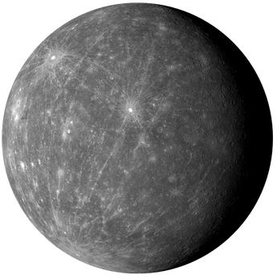
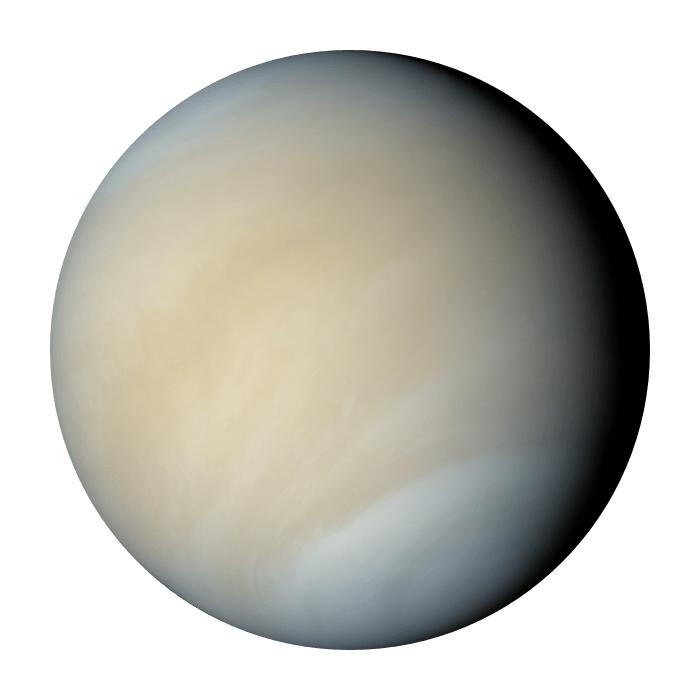
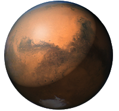

Terra
A Terra é o terceiro planeta mais próximo do Sol, o mais denso e o quinto maior dos oito planetas do Sistema Solar. É também o maior dos quatro planetas telúricos. É por vezes designada como Mundo ou Planeta Azul.

Lista de Planetas do Sistema Solar
Mercúrio é o menor e mais interno planeta do Sistema Solar, orbitando o Sol a cada 87,969 dias terrestres. A sua órbita tem a maior excentricidade e o seu eixo apresenta a menor inclinação em relação ao plano da órbita dentre todos os planetas do Sistema Solar.
Vénus ou Vênus é o segundo planeta do Sistema Solar em ordem de distância a partir do Sol, orbitando-o a cada 224,7 dias. Recebeu seu nome em homenagem à deusa romana do amor e da beleza Vénus, equivalente a Afrodite.
A Terra é o terceiro planeta mais próximo do Sol, o mais denso e o quinto maior dos oito planetas do Sistema Solar. É também o maior dos quatro planetas telúricos. É por vezes designada como Mundo ou Planeta Azul.
Marte é o quarto planeta a partir do Sol, o segundo menor do Sistema Solar. Batizado em homenagem ao deus romano da guerra, muitas vezes é descrito como o "Planeta Vermelho", porque o óxido de ferro predominante em sua superfície lhe dá uma aparência avermelhada.
Júpiter é o maior planeta do Sistema Solar, tanto em diâmetro quanto em massa, e é o quinto mais próximo do Sol. Possui menos de um milésimo da massa solar, contudo tem 2,5 vezes a massa de todos os outros planetas em conjunto. É um planeta gasoso, junto com Saturno, Urano e Netuno.

Saturno é o sexto planeta a partir do Sol e o segundo maior do Sistema Solar atrás de Júpiter. Pertencente ao grupo dos gigantes gasosos, possui cerca de 95 massas terrestres e orbita a uma distância média de 9,5 unidades astronômicas.

Urano é o sétimo planeta a partir do Sol, o terceiro maior e o quarto mais massivo dos oito planetas do Sistema Solar. Foi nomeado em homenagem ao deus grego do céu, Urano, o pai de Cronos e o avô de Zeus.

Netuno ou Neptuno é o oitavo planeta do Sistema Solar, o último a partir do Sol desde a reclassificação de Plutão para a categoria de planeta anão, em 2006. Pertencente ao grupo dos gigantes gasosos, possui um tamanho ligeiramente menor que o de Urano, mas maior massa, equivalente a 17 massas terrestres.